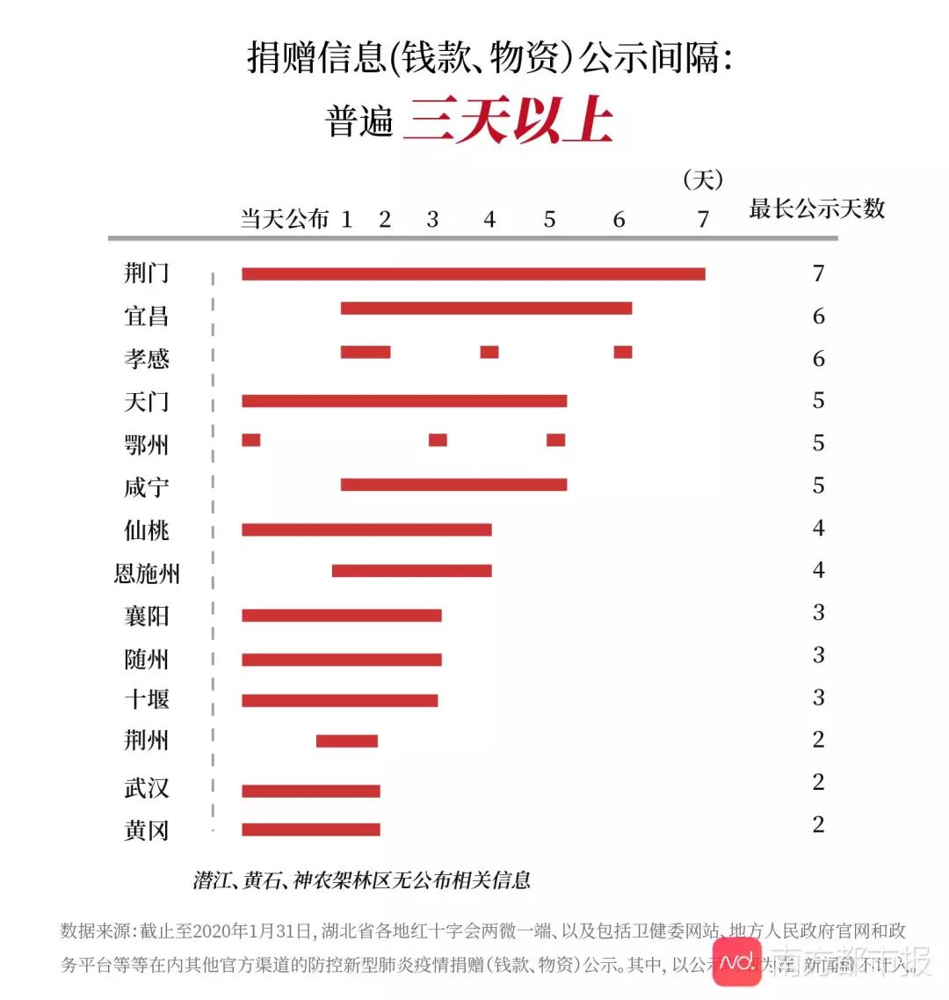
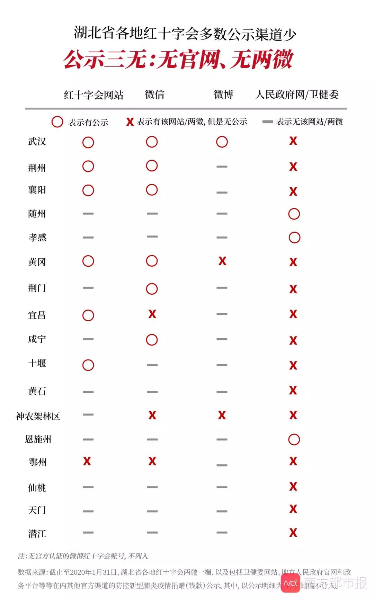

三名一线志愿者口述：红会、校友会、物资信息平台
原文链接 备份链接 “追踪一个人捐赠的物资是真的是没有时间去做的，因为每天捐赠的人太多了” \ 思思，武汉红十字会临时志愿者，话务组 \ 中国红十字会截至 1 月 25 日，累计接受爱心捐赠达 3.4 亿元，接受捐 …
近日，作为新型冠状病毒肺炎疫情的主要捐赠渠道，湖北省及各级红十字会再次站在了舆论风暴之中。疫情爆发以来，社会各界源源不断捐赠湖北，与此同时，前线医院却纷纷在社交媒体上呐喊物资告急，大众不禁发问，我捐的钱用上了吗？给谁用了？这些信息能去哪里看？
就此，南都记者对湖北省及其下辖的17个市（州）（包含12个地级市、1个自治州、3个省直辖县级市、1个省直辖林区）红十字会官方公示的防疫捐赠信息进行了梳理。
多地红会捐赠金额统计混乱，省红会单日数据差额达两千余万
为更好了解湖北省及下属17个市（州）红十字会募捐和物资发放情况，南都记者查询了截止到2020年1月31日，各地红十字会两微一端、以及包括地方人民政府官网、卫健委官网、政务平台等等在内其他官方渠道（以公示明细为准，新闻稿不计入，5小时以上都无法查询到，即查询难度极高的不计入）的公示信息。
抗击疫情之际，社会各界慷慨解囊。作为首府、是疫情“第一线”，武汉市受到举国关注，收到捐款高达6.189亿。居次的是黄冈市红十字会，收到约6175万捐款，排第三的孝感市红十字会，收到约4389.8万元捐款。接下来襄阳市、随州市、荆州市、荆门市和鄂州市等地红十字会，均获得千万捐款。值得注意的是，还有五地红十字会没有社会捐款公示，分别为恩施州、天门市、潜江市、神农架林区、黄石市。

通过对比公开数字，南都记者注意到，湖北省确诊病例分布和各地红十字会收到捐款数额排名有很高重合度，各地确诊病例也大致按照这一顺序排列。

不过南都记者发现，有些红十字会还存在公布数字口径不一致、公示表格格式不统一等问题，很容易让公众在理解上产生混乱。
比如，湖北省红十字会在《捐赠情况公布（一）》中写到，“截止25日16时，全省红十字系统共募集捐款3162.28万元”，但是在其附件表格“2020年1月25日新型肺炎捐款信息公示”中，却显示募集捐款总金额为”3482232.11”元，相差了近2814万元。因为该附件表格未标明具体的截止时间以及涵盖范围（只是省红十字，还是全省累加），很容易让公众产生误解，而且类似问题在其他几个公告中同样存在。

11城红十字会公示信息未提及资金、物品具体流向
除了捐赠信息公开外，物资及资金的明细使用和去向同样是社会关注的重点话题。1月30日，“武汉协和医院医疗物资不是告急，而是即将全部用尽”的新闻引发广泛关注。同日，湖北省红十字会第一次公布了本次疫情以来该会接收捐赠物资使用情况，其中，口罩等物资流向“不合理”和捐赠数量“合不上”等问题，引发公众质疑。
根据公示信息，南都记者发现，截止1月31日，仅有湖北省、武汉市、荆州市、孝感市、鄂州市5个红十字会明确列出了社会捐赠物资及资金的去向，也就是具体划拨给了哪些医院或机构。另外，襄阳市红十字会列出了捐款使用的明细，也就是用捐款购买了哪些物资（未列出划拨给了哪些医院或机构）。


其中，武汉市、孝感市、荆州市、襄阳市四地红十字会在公示中提及资金流向。孝感市红十字会拨付金额占到获捐金额11.48%，襄阳市占28%，武汉市占29.66%，荆州市占比最高，为46.04%。
剩余的11个红十字会只提及了捐赠情况。比如，随州市红十字会在1月31日公布的《随州市红十字会关于接受社会捐赠资金及医疗物资的情况公示(四)》中，只提及了31个单位或个人捐款的时间、金额，以及30日17时至31日17时累计接受捐款的总额，没有对任何支出和划拨给医院的物资或款项进行说明。
至于最近处于舆论风口浪尖上的湖北省红十字会，南都记者注意到，自1月25日开始，湖北省红十字会开始在官网对外公布捐赠情况，截至2月1日，总计公布七次。其中，附有详细捐赠信息的电子表格共计六次（《捐赠情况公布（四）》中未见有详细捐赠信息的电子表格），公开了受捐款项，但没有捐款使用及流向。直到1月30日，湖北省红十字会第一次公布了部分捐赠物资使用情况，距离第一次公布捐赠情况已经过去了五天。
湖北省委副书记、武汉市市委书记马国强在1月31日晚接受《新闻1+1》主播白岩松采访时表示，将责成慈善机构每三天发布接受捐赠的情况、捐赠物品使用的去向。
南都记者整理官网信息发现，在湖北当地的17个红十字会（潜江市红十字会没有官方捐赠信息公布）中，间隔三天以上才公示捐赠情况的现象较为普遍，鄂州市曾经实现过当天获捐当天公布，但也有拖延三四天才公布的记录。荆门市红十字会表现最差，出现31日才补录24日的几例捐赠信息的情况，间隔了七天。整体来看，捐赠信息公布最及时的是武汉市、黄冈市和荆州市红十字会，没有超过两天。

6家红十字会官方传播渠道“三无” 信息查询需辗转多个渠道
社会捐助信息公示工作是慈善工作的重要环节，早在2009年，汶川地震诈捐、虚捐等风波出现后，民政部就曾发布《关于进一步加强社会捐助信息公示工作的指导意见》。
红十字会作为公益机构，建立起统一的媒介平台作为公示渠道，让捐赠人随时了解善款管理使用的情况十分必要。
南都记者发现，湖北省包括17个市（州）的红十字会中有10个没有官方网站，其中随州市、孝感市、荆门市三地在目前公示出来的捐赠款项中，收入均超过一千万。在这10个没有官网的红十字会中，有3个将捐赠信息公示在了当地人民政府网站或者卫健委官网，但仍有包括荆门市、黄石市、咸宁市、仙桃市、天门市、潜江市、神农架林区在内的7个红十字会没有任何官方网站公示信息。

虽然有一些红十字会开通官方微信公众号或微博账号，但账号属于“僵尸账号”，没有公示捐赠信息，相当于没有起到信息公开、供社会舆论监督的作用。
以鄂州市红十字会为例，鄂州市红十字会微信公众号“博爱鄂州”，自1月25日发布接受捐款推文后，也再没有任何更新。
此外，其新浪微博账号没有进行官方认证，拥有24个粉丝。南都记者注意到，该微博在1月26日、1月29日和1月31日分别发布社会捐赠明细情况（一）（二）（四），捐赠明细文件加盖当地红十字会公章。不过，社会捐赠明细情况（一）的链接内容为社会捐赠明细情况（二）。最后，南都记者辗转多个渠道，终于在“云上鄂州”（鄂州政务网站）查询到完整捐赠公示信息。
再如新浪微博@黄冈市红十字会，唯一一条博文发于2015年7月28日，“黄冈市红十字会微博开通了。欢迎大家关注。”
特别需要指出的是，没有建设两微一端“三无”红十字会有6家，分别为随州市区、仙桃市、黄石市、恩施州、天门市、潜江市。
南都记者注意到，最近登上微博热搜榜的杭州红十字会，多渠道公示信息的做法值得借鉴。
1月31日，杭州红十字会常务副会长魏丹英在新闻发布会上表示，为了更好使用和方便社会监督，杭州红十字会从1月28日起在《杭州日报》第四版登报公示每日捐赠物款收入和支出情况，并同步更新官网和微信公众号，还将通过电视滚动播放公示。值得一提的是，不少网友从这份报纸公示中发现“杭州保姆纵火案”当事人林生斌先生于1月28日捐赠价值为9万元的5000只口罩。
校友会、后援会纷纷晒表格、附图片、列明细，打消质疑
除了红十字会外，不少民间组织也发起了募捐。那么他们又是如何进行物资使用说明，解答捐赠者的疑惑？
南都记者了解到，武汉大学深圳校友会从1月29日起，每天通过微信推送关于捐款和支出明细的文章，逐项列出捐款者、金额、捐款物品、采购物品、数量、去向和物流等问题。
针对物流配送这一备受关注的问题，他们写明每一笔物资属于发出、在途还是送达，并附上物资发出图片予以佐证。由于捐款数据庞大，微信推文中还附上网盘地址，供公众查询所有捐款明细。
此外，武大深圳校友会除了列明医院所需物资须符合的标准，还提供一名志愿者的微信二维码，为捐赠者提供标准物资进行指引，避免浪费资源。
这场牵动全国民众的防疫捐赠行动，“饭圈女孩”也没有缺席。南都记者注意到，1月26日，朱一龙粉丝通过微博@Loong_朱一龙公益个站，发起了向湖北部分医院捐赠医用手套的活动。该个站先是联系到手套生产厂商，再通过第三方平台募捐16.4万元用于手套生产和运输。
期间，有粉丝就捐款提出质疑，“Loong_朱一龙公益个站”特地整理粉丝关心的善款使用、手套单价、厂家资质、物资捐赠分配、发货时间、物流配送等问题，统一发博作出详细解释。此外，该个站不断更新手套的运输情况，并附上多张现场图片让粉丝放心。
据该个站1月31日微博，第一批医用外科手术手套于1月30日凌晨抵达黄冈，当地指挥部已经通知医院前往领取，第二批一次性检查手套也已装车运输。


原文链接 备份链接 “追踪一个人捐赠的物资是真的是没有时间去做的，因为每天捐赠的人太多了” \ 思思，武汉红十字会临时志愿者，话务组 \ 中国红十字会截至 1 月 25 日，累计接受爱心捐赠达 3.4 亿元，接受捐 …
原文链接 备份链接 什么拉长了社会捐赠物资从红十字会的仓库到疫情一线医务人员手中的最后短暂的路程？又是谁夺走了医生上战场的武器？ 记者 | 郭苏妍 叶雨晨 邓舒夏 王一越 编辑 | 张云亭 制图 | 程 星 2月1日，中国红十字总会工作 …
原文链接 备份链接 国内外的口罩都在送往武汉，可武汉医院的不仅缺口罩，甚至即将用完。人民日报在其官微发问：究竟是物资紧缺还是物资分配环节存在问题？ 截止到目前，协和医院收到的物资全部来自企业和个人捐赠。物资直接对接到各地疫情指挥部或是各 …
原文链接 备份链接 记者 | 张峰 编辑 | 沈小山 1月31日，何晓丽发现“北京王洋全球影迷会”定向捐赠给湖北麻城市人民医院的2000个一次性医用口罩被麻城市红十字会“拒收”了。 根据快递单号显示，这批1月26日从广东江门顺丰寄出的物资 …
原文链接 备份链接 【财新网】（记者 钱童）一面是全球企业和机构各类物资支援，一面是医院领不到物资公开向社会求援，防疫物资到底在哪里？多位工厂、捐赠和采购方人士告诉财新记者，目前确实面临瓶颈：国内生产或者捐赠的物资被接管，统一调配，多有 …